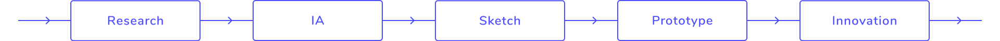
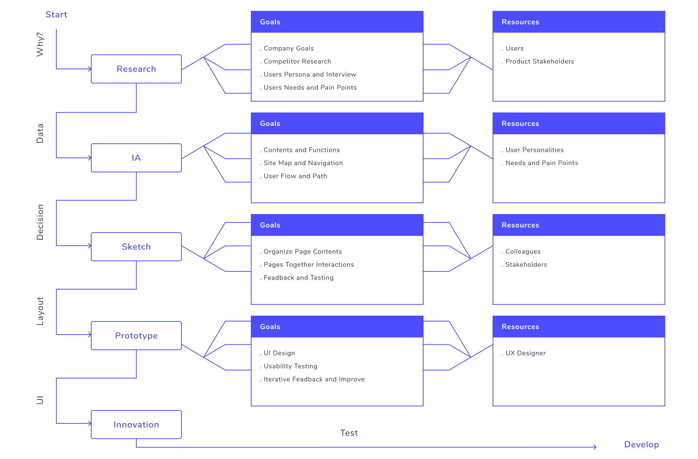

“I love to help people to have a better life. I follow human-centered design and design thinking approaches to create a better design for peoples.”
I’m a Iranian user experience designer currently living in Tehran/Iran. Before I started user experience design, I was a computer engineer with more than 4 years of experience in software development and interested in user interface design. In these years, I worked on different fields of software engineering such as developing mobile applications, developing web applications in both backend and frontend, wireframing, prototyping and designing websites and mobile applications.
I also worked as a teaching assistant in a Software Engineering course and research assistant in the Machine Learning area in particular POI Recommendation Systems as a master’s degree student. Next my valuable experience is working as a co-founder and product manager in a startup with a good team in a new way and dealing with different challenges that I learned more things.
After working in various positions, I found my passion in UX design. This job is my favorite work that I have been looking for all these years. It also passionate me in challenges and different types of skills that are needed and consider all of my experiences that I reached before that. It’s so exciting for me to try it and learn more about that.
In general form, the user experience design process includes a number of steps to achieve goals of user-centered design. Remember, different business’s have UX design processes that are going to differ from other businesses. For example, these steps are 6 for the invision app website post that was shared by the post: The UX design process in 6 stages. These steps contain Understand, Research, Analyze, Design, Lunch and Analyze Again.
For me below steps followed to achieve goals of user experience design:
Before I start the user experience design process, I define product or service by asking one question: WHY? This question follows the purposes and goals of this product or service. “If you don’t have a strong reason for doing one thing, you can't do it. You are like a ship that wanders in the sea without knowing its destination.” Therefore this is a necessary question that you must respond to.
Every design process begins with research. As a user experience designer I know that research in the world of UX design means: It all starts with the user. Usually, after I find purposes of design, I start research with study competitors and related existing works to see what’s out there. I also try to communicate and interview with potential users, as well as product stakeholders, to identify their needs, pain points, and opportunities for improvement. Research step is essential in finding the core features that users need before starting the design.
IA is organizing content in an effective way. To do this, I try to get a good understanding of the functionality of the site, and I follow to have a complete resource of the content. Also in this step I focus on information to make functionalities and contents in a structured way such as, site map, navigation, user flow and path.
Sketch is a low-fidelity version of your product prototype. You can get started with a pen and paper or use digital tools. I use sketches to understand how the content on each page should be organized. Simplicity of the sketch helps me to focus on design, concepts and spend more energy on ideation. This low-fidelity prototype is accessible to everyone and even non-designers can understand and test it. The level of detail in the sketch evolves based on feedback and testing. This step speeds up the process to reach final design in lower time.
After several iterations of sketching and testing, design is ready for a visual makeover. This is where the look and feel of the design come into play. I usually use Figma collaborative interface design tools to add visual aspects of a prototype as a user interface designer. In this step I try to ensure that the user interface enables users to complete their tasks and they enjoy it.
Innovation has always been part of the human experience. Without it, people wouldn't have grown in their history. From the earliest cave paintings to the modern age, humans have been innovating continuously, improving their quality of life along the way. Innovation is an integral part of every design process. I use innovation as a separate step in my design process because I believe it's the most important source of growth in the real world and essential to create new things and make life easier. “Innovation is the same secret sauce that you add to your tasteless food to give it a better taste.”
Test Step: Maybe you ask a question about the test step is not in this process? This is a good question. Test step is necessary to test and improve the usability of your design. But, this step in reality exists in all of the process steps and you can’t separate from them.
Iterative Process: One of the most important characteristics of every modern design process is to be iterative, as an Agile methodology. A good user experience design process is not finished and always must improve in its life.
In the below diagram, an overview of steps that I follow in my design process are shown.
